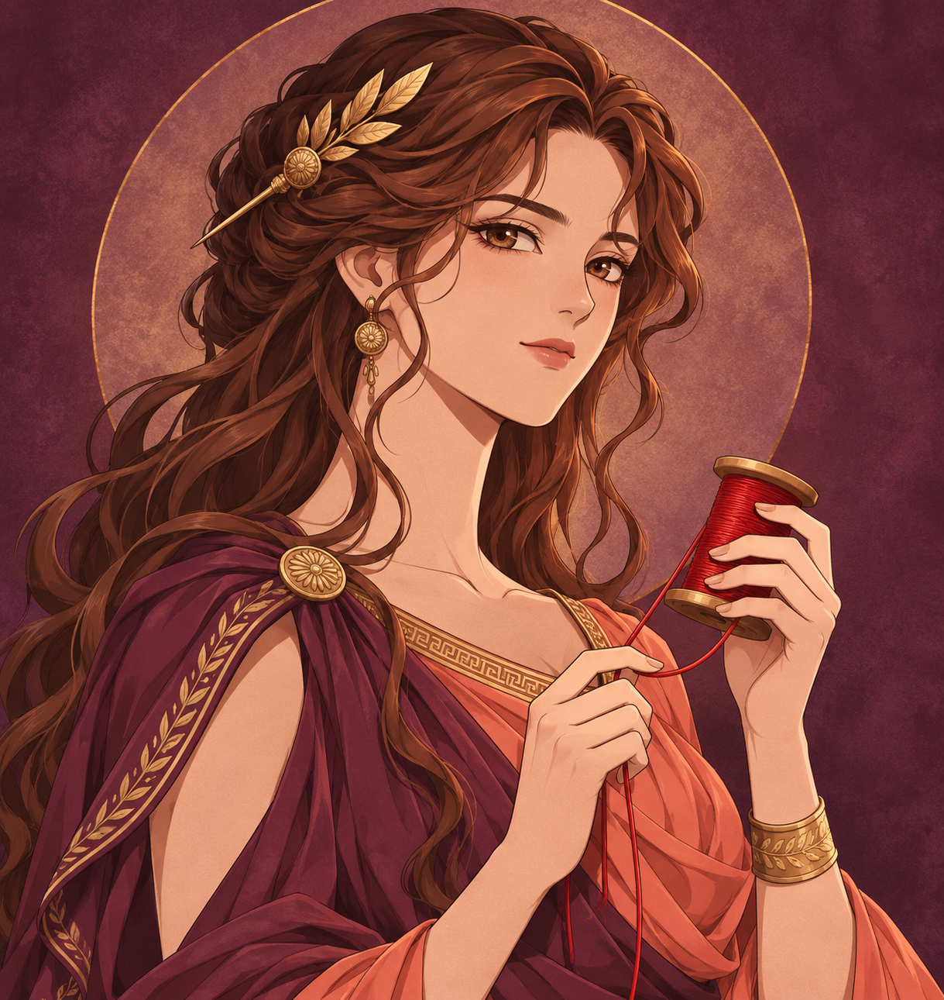

KOREAN WEBTOON CHARACTER SHEET
아리아드네
조력자 · 길잡이

외형 고정점
긴 밤색 머리, 또렷한 눈썹, 차분한 눈빛. 움직임은 작고 정확하며 손끝에 지혜가 드러난다.
고정 소품
붉은 실타래 · 금빛 머리핀 · 푸른 소매
색상 팔레트
#e58b72
#6a3f5e
장면 연기 지침
말보다 준비와 배려로 마음을 보여준다. 미궁 장면에서도 시선은 흔들리지 않는다.
관계와 감정선
테세우스에게는 신뢰와 애정, 미궁에는 통찰, 떠나는 순간에는 상처를 절제된 표정으로 표현.
연속성 체크
- 머리 모양과 실루엣을 장면마다 유지
- 고정 소품은 색상과 위치를 임의로 바꾸지 않기
- 감정 변화는 눈썹·시선·손의 순서로 표현